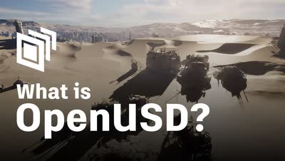
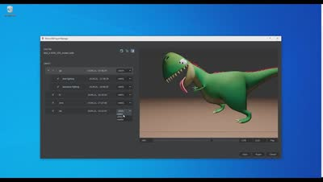

記事・リンクを検索
⌘K
13 件のポスト

MayaからVariant付きのUSDをエクスポートするためのツール（GitHub公開）。

ILMやDNEGでの勤務経験を持つSteven Corman氏が、Double Jump Academyで新しい背景制作チュートリアル「Advanced Matte Painting」をリリースしたこと。使用ソフトはHoudini、Maya、Gaea、Nuke、Photoshop。

Substance 3D PainterでACESを扱うための公式解説シリーズ。カラースペースの基礎、PainterでのOCIO設定、Maya・Blenderへの受け渡しを3本で扱う。

「OpenUSDという言葉は聞くが結局何なのか分からない」という層に向けて、Autodeskが基礎から解説する1時間強のセッション。

MayaでPySide2の.uiファイルをそのまま使うべきか、Python化して利用すべきかを解説するUnzai氏の記事。

Maya・After Effects・NUKEを行き来する制作で、ACESのカラースペースとOpenColorIOのプロファイルをどう管理するかのデモ。

Prism 2.0の標準USDワークフローを、モデリングからサーフェシング・リギング・レイアウト・FXまで工程ごとに辿るFMX 2021の講演。

幻想的な世界の環境制作を学べるコース「3D Environments: Create Otherworldly Fantasy Lands」。最終レンダリングはClarisseだが、Maya・Houdini・Nukeについても学べる内容。

MayaとArnold向けのアセットライブラリプラグイン「Asset_Ingester」。

MayaとArnoldを使ってLegoのブラスターを制作するチュートリアル動画。小規模なアセットを丁寧に作り込む機会は少ないとして紹介している。

Anthony Eftekhari氏による3D Matte Paintingのチュートリアル。主にMaya、3ds Max、Photoshopを使用する。

Steffen Hampel氏による、「Japanese Alley」という作品を制作するWingfoxのチュートリアル。MayaとV-Rayがメインに使用されている。

Blizzard Entertainment所属で映画『Dune』にも参加したAndrew Hodgson氏による、UV展開の実演。過去に多田学氏のセミナーでも参考ポートフォリオとして紹介されていた。